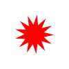
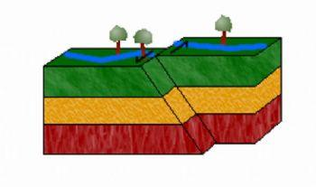

Καλωσόρισες στο νησί! Απάντησε σωστά σε όλες τις ερωτήσεις για να φτάσεις στον θησαυρό. Για να εμφανιστεί η ερώτηση, κάνε κλίκ στο κόκκινο αστέρι. Καλή Επιτυχία!
22
Ερώτηση #22
Πως ονομάζεται η αλλαγή της εξωτερικής επιφάνειας της γης που οφείλεται στις εξωγενείς δυνάμεις;
21
Ερώτηση #21
Σε ποιά κατηγορία δυνάμεων της γης ανήκουν τα ηφαίστεια & οι σεισμοί;
20
Ερώτηση #20
Πόσες είναι οι μεγάλες λιθοσφαιρικές πλάκες;
19
Ερώτηση #19
Η απομάκρυνση των πλακών προκαλεί τη δημιουργία:
18
Ερώτηση #18
Aπο την έκρηξη ηφαιστείου μπορεί να δημιουργηθεί ένα νησί
17
Ερώτηση #17
Αν κατά την διάρκεια του σεισμού βρίσκεσαι σε εξωτερικό χώρο θα πρέπει:
16
Ερώτηση #16
Η Ελλάδα είναι μία γενικά σεισμογενής χώρα.
15
Ερώτηση #15
Οι σεισμολόγοι μπορούν να προβλέψουν με ακρίβεια πότε θα γίνει ένας σεισμός.
14
Ερώτηση #14
Η λέξη εγκέλαδος χρησιμοποιείται ποιητικά για να περιγράψει:
13
Ερώτηση #13
Ποιά είναι τα πετρώματα που σχηματίστηκαν πρώτα;
12
Ερώτηση #12
Ποιός είναι ο κρατήρας του ηφαιστείου;
11
Ερώτηση #11
Tι συνιστάται να κάνουμε την ώρα του σεισμού;
10
Ερώτηση #10
Σεισμός μπορεί να προκληθεί είτε από την ολίσθηση των λιθοσφαιρικών πλακών, είτε από την έκρηξη ενός ηφαιστείου.
9
Ερώτηση #9
Μπορούμε να προβλέψουμε την έκρηξη ενος ηφαιστείου όμως δεν μπορούμε να προβλέψουμε πότε θα γίνει σεισμός.
8
Ερώτηση #8
Οι υδρατμοί που εκπέμπονται σε ηφαιστειογενείς περιοχές πιστεύεται οτι έχουν θεραπευτικές ιδιότηες.
7
Ερώτηση #7
Αιτία αφάνισης του μινωικού πολιτισμού εικάζεται ότι υπήρξε:
1

Ερώτηση #1
Όταν οι λιθοσφαιρικές πλάκες συγκρούονται τότε δημιουργείται:
2
Ερώτηση #2
Ποιές είναι οι πιο σεισμογενείς περιοχές της Ελλάδας;
3
Ερώτηση #3
Που μπορεί να προκαλέσει προβλήματα ένας σεισμός;
4
Ερώτηση #4
Σε ποια πετρώματα ανήκουν ο βασάλτης και ο οψιδιανός;
5
Ερώτηση #5

Όταν συμβαίνει αυτή η κίνηση τότε έχουμε:
6
Ερώτηση #6
Η Ελλάδα βρίσκεται κοντά στα σύνορα της ____ πλάκας